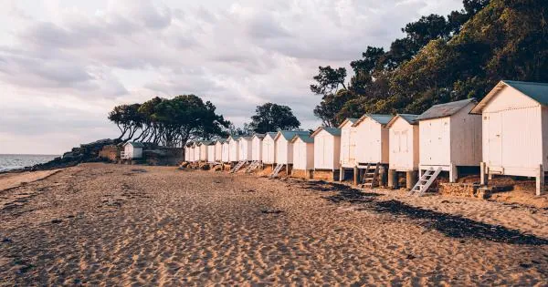
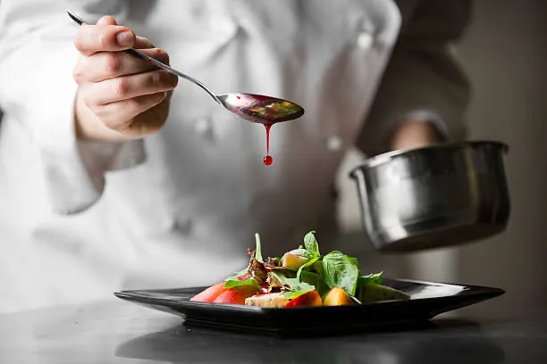

Trois étoiles since 2013. La Marine conserves its three stars in the 2026 Michelin guide [5] — the island's only gastronomic anchor.
Lead time: months, not weeks. Maison Moizeau, the chef's own guesthouse next door, must be asked about in the same call — five rooms against three-star demand means they fill immediately. [3]
The causeway at Passage du Gois emerges at 14:20 and re-floods by 17:20 — a clean three-hour walking window centred on the 15:49 low. The 19:15 dinner sits safely two hours beyond the flood. A neap coefficient of 52 means gentler tides than a spring crossing, but the road will still be underwater outside the window. Sunset at 21:59 [17] means the long tasting menu finishes in blue-hour light.
The booking sequence is the whole plan. Every other choice — lodging, taxi, activities — follows from the date the table confirms.